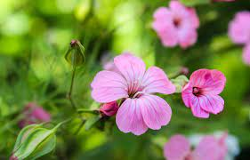
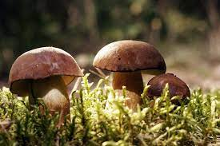

Рослини
Росли́ни (Plantae), або зелені рослини (Viridiplantae) — царство живих організмів. Назва Viridiplantae була запропонована у 1981році, щоб відрізнити представників царства від попереднього визначення рослин, які до того не утворювали монофілетичну групу. Також царство відоме під назвою Chlorobionta або група Chlorophyta/Embryophyta. Більшість членів царства були включені до царства Рослини (Plantae) в 1866 Ернстом Геккелем. Представники царства — автотрофні організми, для яких є характерною здатність до фотосинтезу та наявність щільної клітинної оболонки, яка утворена здебільшого целюлозою. Запасною речовиною у рослин є, як правило, крохмаль. Рослини є першою ланкою всіх харчових ланцюжків, так що від них залежить життя тварин. Вони є джерелом більш як десяти тисяч біологічно активних речовин, які діють на організм людини та тварин, зокрема при вживанні у їжу.
Рослини Волинської області, занесені до Червоної книги України
До списку входить 109 видів рослин, з них:
Серед них за природоохоронним статусом:
Водорості, занесені до Червоної книги України
Список водоростей, занесених до Червоної книги України.
До списку входить 60 видів водоростей.
З них:
Гриби Червоної книги України
До даного списку включено 57 видів грибів третього видання Червоної книги України (2009 р.).
I. Боровик бронзовий
II. Боровик королівський
III. Веселка подвоєна
